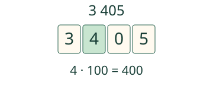
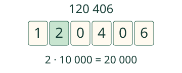

Aava järjestää lukukortit. Mitä nolla säilyttää?
Tunnistan numeron arvon sen paikasta.
Nolla ei siirrä muita numeroita
3 405 = 3 000 + 400 + 0 + 5. Kolme tuhatta, neljä sataa, ei kymppejä ja viisi ykköstä. Numero 4 tarkoittaa tässä neljää sataa. Numeroiden yhteenlasku 3 + 4 + 0 + 5 ei anna luvun arvoa.

Sama numero, kaksi arvoa
Luvussa 4 405 vasen 4 on tuhansien paikalla: 4 000. Toinen 4 on satojen paikalla: 400. Siksi kysymme myös paikkaa, emme vain numeron nimeä.
Suuremmat lukuyksiköt jatkavat samaa sääntöä
10 sataa on 1 tuhat. 10 tuhatta on 1 kymmenentuhatta. 10 kymmentätuhatta on 1 satatuhatta. 10 satatuhatta on 1 miljoona. Vasemmalla olevan paikan yksikkö on aina kymmenen viereisen oikean paikan yksikköä.
120 406 = 100 000 + 20 000 + 400 + 6. Tuhansien ja kymmenten paikat ovat tyhjät, joten niissä tarvitaan nollat. Välit vain helpottavat lukemista: 120406 on sama luku. Suomessa tuhatryhmät erotetaan välilyönnillä, ei desimaalipilkulla.

Mieti: Miksi 2 061 on suurempi kuin 261, vaikka niiden ei-nollaiset numerot ovat samat?
Katso ajatus
Luvussa 2 061 on kaksi tuhatta. Luvussa 261 on vain kaksi sataa. Nolla säilyttää satasten paikan ensimmäisessä luvussa.
Kokeile oma vastaus
Tutki lisää
2 400 voidaan esittää 2 tuhannen ja 4 sadan kortilla tai 24 sadan kortilla. Määrä ei muutu. Vertaa 4 069:ää ja 4 601:tä vasemmalta: tuhannet ovat samat, mutta 6 sataa on enemmän kuin 0 sataa.
Lopuksi: Mikä on numeron 5 arvo luvussa 50 008? Miksi et voi poistaa nollia?
Opettajalle ja ilman ruutua
Luokat 3–6; pakollinen esitieto M-PLACE-03. Tavoite: satojen, tuhansien ja suurempien paikkojen arvo sekä nollan merkitys. Kertomerkintä numero · yksikkö luetaan yhdessä, eikä kertotaulujen muistamista vaadita. Kartassa muut tukisuhteet eivät muutu lisäporteiksi.
Tee paperikortteja arvoilla 1,10,100,1000 ja edelleen. Vaihda kymmenen samaa korttia yhteen seuraavan yksikön korttiin. Fyysisen kortin pinta-ala ei kuvaa määrää. Pyydä osoittamaan kumman 4:n arvosta puhutaan luvussa 4405. Aikuinen saa lukea; lukujen ääneen nimeäminen ei ole vastaamisen ehto.
Liike näyttää korttien vaihdon, ei rahansiirtoa tai fyysistä nopeutta. Koko yhteisarvo pysyy samana myös kesken liikkeen. Käynnistys on aina vapaaehtoinen. Tuetun numeron kirjoittaminen ei osoita yleistä kirjallista laskutaitoa, itsenäistä siirtovaikutusta tai pysyvää hallintaa. Tarkistus koskee vain nykyisiä kenttiä. Ei tallennusta, henkilöhistoriaa tai vaikuttavuusväitettä. Harjoitus käyttää kokonaislukuja 0–9 999 999, ei desimaaleja tai negatiivisia lukuja.